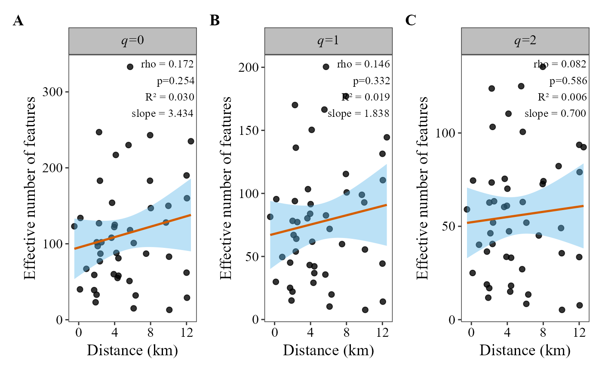
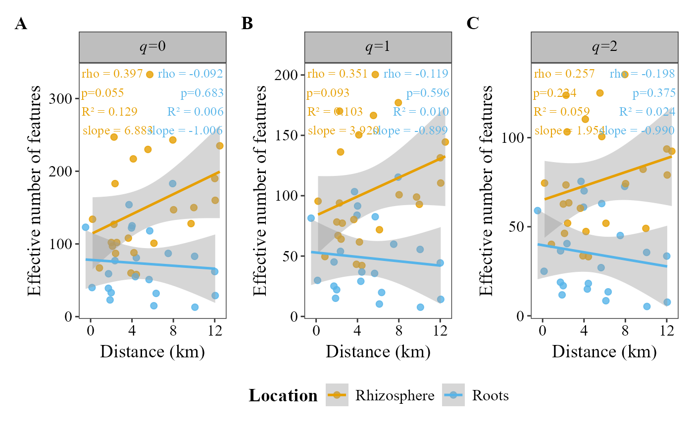

Computes Hill numbers (q = 0, 1, 2) from table and plots them against a continuous metadata variable (e.g. distance to urban center, elevation, pH). It reports the Spearman rank correlation coefficient (rho, or Pearson r), its p-value, and optionally the linear regression R-squared and slope.
Usage
alpha_decay_plot(
table,
metadata,
cont_var,
group_col = NULL,
method = "spearman",
show_lm_stats = TRUE,
facet_orientation = "horizontal",
palette = "colorb",
group_colors = NULL,
x_axis_title = NULL,
y_axis_title = "Effective number of features",
title = NULL,
show_legend = TRUE,
legend_position = "bottom",
free_y = TRUE,
point_size = 2,
line_width = 0.9,
point_alpha = 0.8,
annotation_size = 3.5,
panel_label_case = "upper",
panel_labels = NULL,
panel_label_bold = TRUE,
strip_text_bold = FALSE
)Arguments
- table
A data frame with taxa in rows and samples in columns. The last column must be named
taxonomy, containing full taxonomic strings.- metadata
A data frame containing sample metadata. Must include a
SAMPLEIDcolumn matching sample names intable.- cont_var
Character. Name of the continuous variable column in
metadatato place on the x-axis (e.g."dist_km").- group_col
Character or
NULL. Optional column inmetadataused to color points and fit separate regression lines per group (e.g."treatment").- method
Character. Correlation method for the statistic annotation. One of
"spearman"(default) or"pearson".- show_lm_stats
Logical. If
TRUE(default), adds R-squared and slope from the linear model to the annotation label.- facet_orientation
Character.
"horizontal"(default) places q-panels in a single row;"vertical"stacks them in one column.- palette
Character. Built-in palette name:
"colorb"(default),"grey","viridis", or"brewer".- group_colors
A named or unnamed character vector of colors. Overrides
palettewhen provided.- x_axis_title
Character. X-axis label. Defaults to the value of
cont_var.- y_axis_title
Character. Y-axis label. Default:
"Effective number of features".- title
Character or
NULL. Overall plot title.- show_legend
Logical. Show the color legend? Default
TRUE.- legend_position
Character. Legend position:
"bottom"(default),"top","right", or"left".- free_y
Logical. Use free y-axis scales across facets? Default
TRUE.- point_size
Numeric. Size of scatter points. Default
2.- line_width
Numeric. Width of regression lines. Default
0.9.- point_alpha
Numeric (0-1). Transparency of points. Default
0.8.- annotation_size
Numeric. Font size for the stats annotation. Default
3.5.- panel_label_case
Character. Case of the auto-generated A/B/C panel tags. One of
"upper"(default, "A", "B", "C") or"lower"("a", "b", "c"). Ignored ifpanel_labelsis supplied.- panel_labels
Optional character vector of 3 custom panel tags (one per q0/q1/q2 panel), used as-is (e.g.
c("(a)", "(b)", "(c)")orc("a.", "b.", "c.")) – for journal styles thatpanel_label_casealone can't produce. Overridespanel_label_casewhen provided.- panel_label_bold
Logical. If
TRUE(default), panel tags are bold. Set toFALSEfor journals that require plain (non-bold) panel tags.- strip_text_bold
Logical. If
TRUE, the q0/q1/q2 facet strip labels are bold. DefaultFALSE(plain), as in the other functions.
Value
A patchwork object joining the three q0/q1/q2 panels
(always tagged A/B/C). It can still be modified: p & theme(...)
changes every panel, p[[2]] + labs(...) a single one.
Examples
table_path <- system.file("extdata", "tabla_bacteria.txt", package = "MicroBioMeta")
table <- read.delim(table_path, row.names = 1, check.names = FALSE)
metadata_path <- system.file("extdata", "metadata_bacteria.txt", package = "MicroBioMeta")
metadata <- read.delim(metadata_path, check.names = FALSE)
colnames(metadata)[1] <- "SampleID"
loc_dist <- data.frame(Loc = 1:7, dist_km = seq(0, 12, length.out = 7))
metadata$dist_km <- loc_dist$dist_km[match(metadata$Loc, loc_dist$Loc)] +
stats::rnorm(nrow(metadata), sd = 0.3)
# All samples, no grouping. Always tagged A/B/C (see panel_label_case and
# panel_labels to customize)
alpha_decay_plot(
table = table,
metadata = metadata,
cont_var = "dist_km",
x_axis_title = "Distance (km)"
)
#> Warning: cannot compute exact p-value with ties

# Separate regression lines by location
alpha_decay_plot(
table = table,
metadata = metadata,
cont_var = "dist_km",
x_axis_title = "Distance (km)",
group_col = "Location"
)
#> Warning: cannot compute exact p-value with ties
